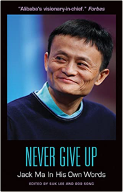
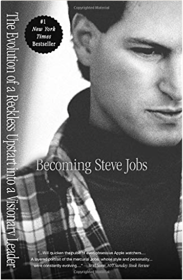

Never Give Up: Jack Ma In His Own Words  Ever since the Alibaba Group went public on September 19, 2014—with an initial public offering of a record-breaking $25 billion—Jack Ma, the founder and charismatic "spiritual leader" of the e-commerce behemoth, has been making headlines around the world. In 2014, the company's online transactions totaled $248 billion—more than those of Amazon and eBay combined. The first Chinese entrepreneur to appear on the cover of Forbes, Ma is the now the second-richest man in China, with a net worth that is estimated to be north of $29 billion.Despite Ma's massive influence in China and in the global tech world, his inspirational rags-to-riches story is relatively unknown to the general American public. Never Give Up: Jack Ma In His Own Words is a comprehensive guide to the inner workings of arguably the most prominent figure in the global tech world in the past 20 years—comprised entirely of Ma's own thought-provoking and candid quotes. When Ma decided to start his first Internet company in 1999, few Chinese people knew what the Internet was. Ma, a former English teacher, knew nothing about coding, and his $20,000 in startup funds were not made up of investments from venture capitalists but loans from his family. He channeled his startup experience into Alibaba, a group of websites that allows businesses and people to connect in order to buy and sell products (similar to eBay and Amazon) while also collecting advertising revenue (similar to Google). By some measures, Alibaba is now the largest e-commerce site in the world. In this book, more than 200 quotes on business values, innovation, entrepreneurship, competition, management, teamwork, life, and more provide an intimate and direct look into the mind of this modern business icon and philanthropist. Many of these quotes are translated directly from the Chinese press and interviews. For readers who do not read Chinese and have no other access to these materials, this book provides invaluable insight into the mind of one of the world's most successful business magnates. The Oracle Speaks: Warren Buffett In His Own Words  Despite this tremendous success, “the Oracle of Omaha” remains modest. He acknowledges that he has a unique ability to evaluate businesses, but he doesn’t feel entitled to the vast wealth that ability has earned him. Instead, he likes to say that he was born at the right place and time. This humility in the face of proven talent and innumerable wealth is part of what makes Buffett universally popular—he is one of the world's wealthiest men and yet he is still personable and relatable. For the first time, the most thought-provoking and inspiring quotes from Buffett are now compiled in a single book. The Oracle Speaks: Warren Buffett in His Own Words is a comprehensive guidebook to the inner workings of the Berkshire Hathaway chairman. Hundreds of Buffett's best quotes, comprising thoughts on investing, Wall Street, business, politics, taxes, and life lessons, will provide the most intimate and direct look into the mind of a modern business icon and give readers enough counsel to last a lifetime. Media outlets, financial advisers, politicians, and Americans from Main Street to Wall Street hang on every word Buffett speaks, hoping to gain valuable insight into Buffett's investments and successes. There is possibly no greater stamp of approval in the business world than to have Buffett invest in a company, and few leaders in the course of history have commanded such universally agreed-upon respect. Even beyond his business savvy, Buffett is influential as a progressive thinker and active philanthropist, having pledged to give most of his money to charity through the Bill and Melinda Gates Foundation as well as foundations run by his three children. It is this humility that consistently draws people to Buffett, and will draw people to The Oracle Speaks. Most recently, inspired by Buffett's New York Times editorial in which he claimed he paid too little in taxes, President Barack Obama and Congress have named a series of tax reforms after Buffett. While the political implications have been controversial, Buffett has retained his reputation as an outspoken and successful business leader. The Oracle Speaks draws from decades of interviews, editorials, and annual shareholder reports, amassing the most complete outline of how Buffett believes a good business is run and a good life is led. It's advice that Buffett has successfully adhered to throughout his 80-plus years, and it is advice now available in the succinct, poignant, gift-friendly package of The Oracle Speaks. Daughter of the East: An Autobiography Bhutto, BenazirLiving History Clinton, Hillary RodhamI'll Do it My Way Christina DanielsBuffett: The Making of an American Capitalist  Osama Randal, JohnBecoming Steve Jobs: The Evolution of a Reckless Upstart into a Visionary Leader  Schlender, Brent, Tetzeli, RickThe Snowball: Warren Buffett and the Business of Life  The Business Wisdom of Steve Jobs  |


2021 website
Collection Total:
193 Items
193 Items
Last Updated:
Jun 18, 2021
Jun 18, 2021
 Made with Delicious Library
Made with Delicious Library
Springfield, State zipflap congrotus delicious library Jiwani, Faisal